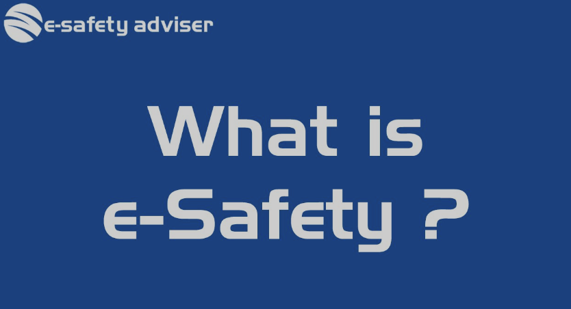

Understanding E-Safety

E-safety, or electronic safety, involves practices and measures to protect individuals when they are using the internet and digital devices. It's about ensuring that personal information is secure, avoiding harmful content, and being aware of online threats like scams, cyberbullying, and identity theft.
Here are a few key aspects of E-safety:
Privacy: Protecting personal data and using strong passwords.
Security: Using antivirus software and keeping systems updated to prevent malware and hacking.
Content: Being cautious about what you share and consume online.
Communication: Knowing how to deal with cyberbullying and inappropriate content.
Staying informed and following best practices can make your online experience safer and more enjoyable. If you want to dive deeper into any of these aspects, let me know!